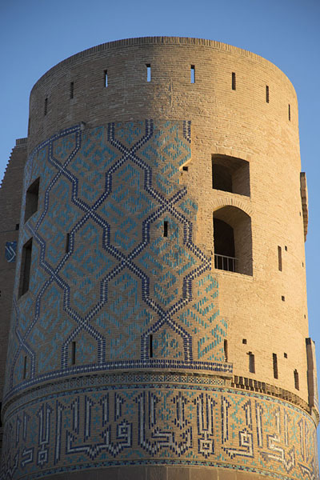
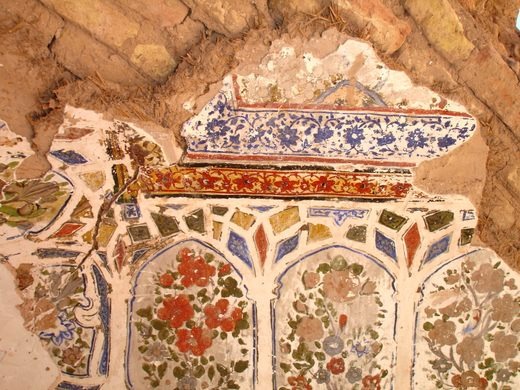
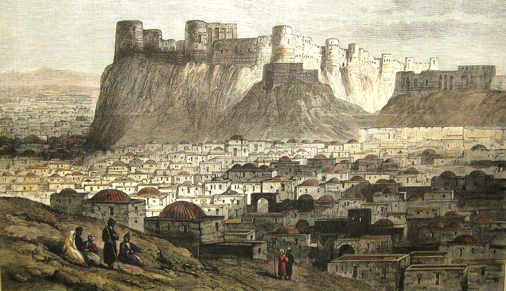
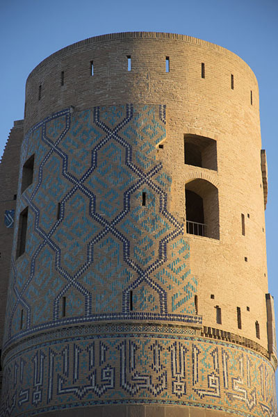
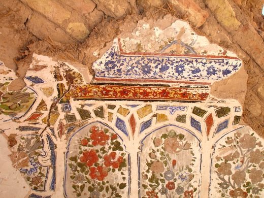
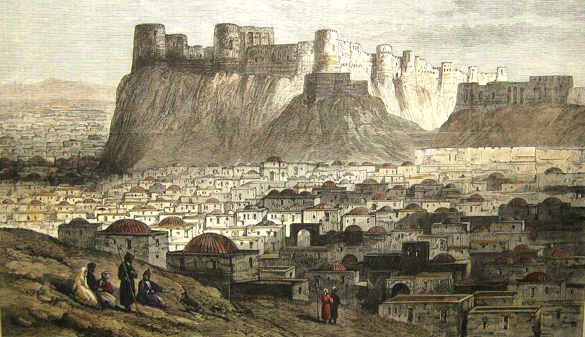

The Enigmatic Charm of Herat Citadel
Nestled in the heart of Afghanistan's Herat province, the Herat Citadel stands as a living testament to centuries of history and architectural prowess. Dating back to the time of Alexander the Great, this majestic fortress has witnessed the ebb and flow of empires, from the Greco-Bactrian era to the Ghorid dynasty and beyond. Its striking architecture, a blend of Persian, Islamic, and Central Asian influences, reveals a fascinating crossroads of cultures. The Herat Citadel served as a crucial hub along the fabled Silk Road, where traders, scholars, and conquerors once converged. Beyond its fortifications, its rich history is a narrative of poets, philosophers, and artisans who flourished within its protective walls. Today, the Herat Citadel stands as a living relic, offering a window into the past and a symbol of resilience, proudly preserving its cultural heritage amidst the modern world.
 




